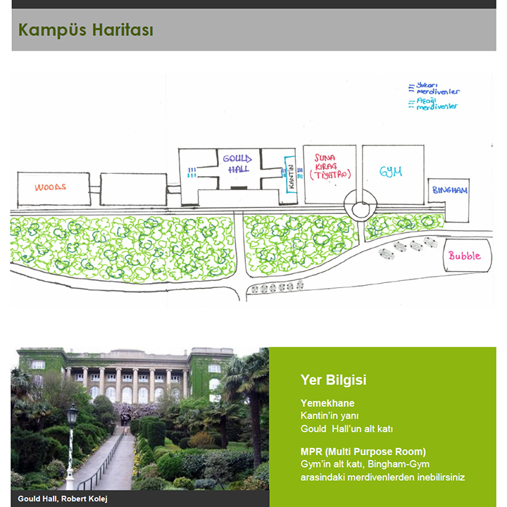
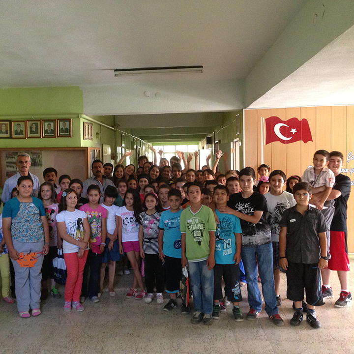
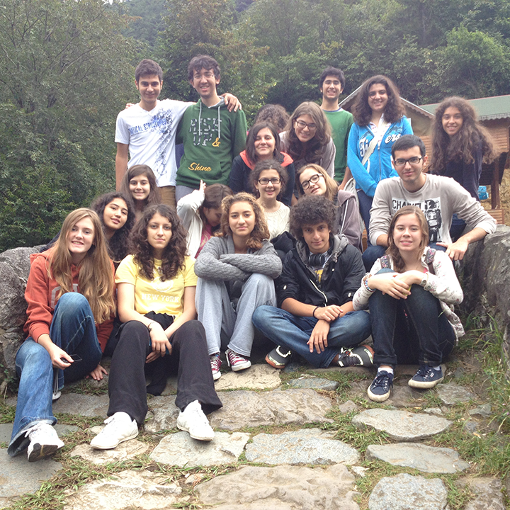
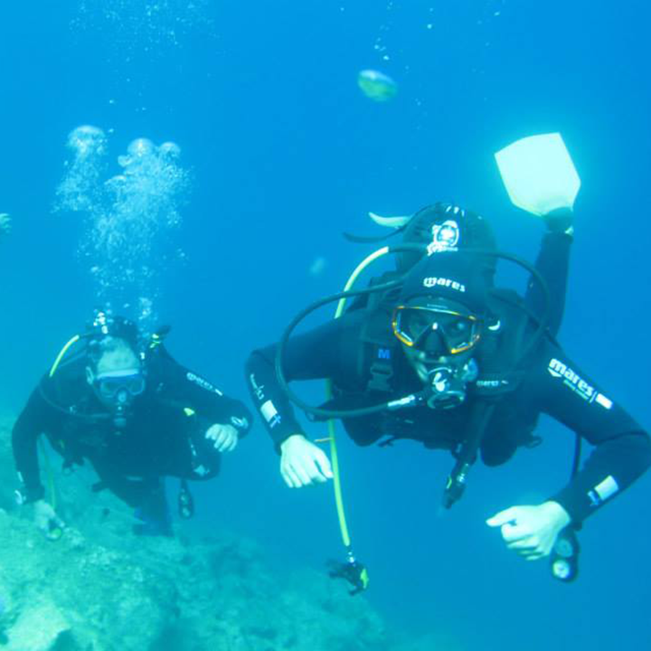

Personal Information
- Name: Orkun B. Duman
- Date of birth: 10 August 1996
- Nationality: Turkish
- Address: Cekmekoy, Istanbul, Turkey
- Phone: +90 (533) - 654-5487
- Email: orkun@duman.me
PERSONAL Profile
I was born in Istanbul in 1996. I have always been interested in getting to know other cultures and trying out different things. My main area of interest is Computer Science, especially software development. I became aware of my interest and talent on software at Bilim ve Sanat Merkezi (Bilsem), the government institute for gifted children which chooses its attendants with a two stage exam in intellectual, artistic and musical areas. I was found to excel in the artistic area and was accepted into Bilsem. Physics, Mathematics and Economics are the other subjects I am interested in. I have always been in the top 10 percentile of my class. I like to assume the leadership role in projects. I believe that my soft skills, my trustworthiness and my ability to motivate people are my advantages. To improve these skills, I have done internships and built projects on my own. Right now, I have an ongoing project named NoMercyMC (www.nomercymc.com). This project is a modified version of the open source game Minecraft. It has 150 thousand members registered and has an income exceeding 3000 US dollars per month. I have also improved my sales and marketing skills while working on this project I have also improved my organizational and leadership skills via the crew I assembled. The economics classes I had taken helped me to manage my budget and gave me a good perspective especially on the cost side.
I have never taken sports out of my life despite a busy course schedule and entrepreneurship. I like spending my holidays by trying out different types of sports, water sports being my favorite. Right now I am running marathons and doing fitness workouts regularly. I would like to attend a top-notch university where I can focus on Computer Science and have my own startup project.
Work Experince
August 2014 - September 2014
Mobile Developement
Internship at Turkcell, Full-Time
An internship at Turkey's largest cell phone company was a great opportunity. As the first High School student they hired, I spent three weeks working with the Turkcell Technology Mobile Development team. During the first 3 days I learned the Android operating system, and finished the week by reading articles on Android Wear. The following weeks I was assigned to POC projects on the Android and iOS platforms. I completed 2 major projects, and received motivating feedback from my coach and manager. I also contributed to “Turkcell Gelecegi Yazanlar” with a blog post, supporting programming education.
- Learned Android and iOS at the beginner level
- Was able to work with the brand new Android Wear platform
- GOR motivated in research and self-education
November 2013 - December 2013
Sales and Support
Internship at Microsoft, Full-Time
During my time at Microsoft Turkey, I had the opportunity to do 1to1's with professional people from various departments. I did not work in a development project but I was able to get a lot of experience doing the 1to1's. I figured what sales people, product designers, corporate affairs specialist and support assistants do. This helped me understand what I really wanted to do.
- 1to1's with professionals in their area of expertise
- Coded the app SuggestionBox for Windows Phone
July 2012 - August 2012
Internal Control
Internship at Denizbank, Full-Time
I learned the internal structure of a bank, or a large enterprise in general, during the internship. I was able to shadow an internal control specialist for a month. I carried out various tasks such as risk management, daily checks and personnel reports.
- Organizational structure of a large enterprise
- Branch visits, field work
- Human relations and monitoring
August 2011 - August 2011
Software Engineering
Internship at Intertech, Full-Time
I took part in Internet banking development. Helped form a user friendly GUI and did lots of tests for debugging. I also wrote an e-commerce code, which I am still using on my NoMercyMC project with a few modifications. This got me familiar to working with libraries and building API's/Docs.
- GUI design and debugging
- Built e-Commerce API
- Useful .NET experience
July 2010 - August 2010
Technical Support
Internship at Denizbank, Full-Time
My first paid work experience was at a local bank called Denizbank. I worked there for 3 months at the Technical Support department. The job required me to setup new PCs, repair old ones or replace them. I also set up many domain and printer networks, making sure the interior communication principles of the bank remained intact.
- PC related hardware skills
- Knowledge of windows operating systems and network
- Working with beneficiaries via ticket systems
Education
2010 - PRESENT
ROBERT COLLEGE
American High School, Arnavutkoy/Istanbul
Robert College is a co-educational high school founded in 1863. Admission is based on the standardized high school entrance exam developed by the Ministry of National Education. Students who come to Robert College score in the top 0.2% on this exam. Following their five-year education, RC graduates continue their higher education at top-ranked universities in Turkey and abroad. Robert College aims to educate students to strive to become leaders in their chosen fields. Many alumni from Robert College’s earliest days up to today have played instrumental roles in areas like politics, arts, education and science, in Turkey and around the world. Webpage: Link
2007 - 2010
Sezin Koleji
Elementary School, Cekmekoy/Istanbul
Sezin Koleji was founded by Sabahat Sezin in 1963 at Caddebostan region of Istanbul. In 2001, Sezin High School joined Sezin Educational Foundation. Believing in the holistic value of education, the school’s purpose is to ensure its students to become confident, modern, world citizens following the principles of Kemal Atatürk, the founder of modern Turkey. Likewise, they attach utmost importance to educate their students as individuals, who respect their customs, their cultural heritage, their environment and who are responsible, equipped with questioning mind and entrepreneurial skills. Webpage: Link
2004 - 2012
Bilim ve Sanat Merkezi
Supplemantary School For the Gifted, Atasehir/Istanbul
Bilim ve Sanat Merkezi, also known as Bilsem, is a state institute for highly gifted children. Entrance is through the reference of a school teacher and analytical and artistic talent tests. I was able to study physics, algebra, chemistry, philosophy, and computers here. Our mentors did not teach classes but instead lead us to information. In the many years I spent here, I discovered my interests, developed them and published projects with friends. Webpage: Link
References
Süreyya Ciliv
CEO / Turkcell
Orkun is an extremely attentive and smart person. His strong commitment to the given tasks and his interest on learning new subjects is extraordinarily remarkable. Not only Orkun has a natural talent on software development, but also he is skillful and inventive when following his intuitions. While the programs he developed were important contributions to the forthcoming Turkcell apps, his invaluable ideas significantly improved their quality. Undoubtedly, these added great value to our Mobile Development Department processes. Read More
Hakan Ates
CEO / Denizbank
I have had the pleasure of knowing Orkun Bulut Duman for 18 years, through his mother, whom I have been working with at DenizBank Turkey. I have known Orkun in many circumstances, and I find him to be both an academically strong and confident student and a creative leader among his peers. He is the type of student who always has willingness to learn and experiment new subjects and ideas. He is also very determined to run after his own ideas that he feels passionately about, even if they are different from those of the majority. Read More
Technical Skills
HTML and .NET
Expert, 8 years
Started HTML and .NET development at Bilsem and have been in the area since. I have published a considerable amount of websites, including personal and professional ones.
Java
Advanced, 2 years
Started programming Java at the Robert College AP Programming class. With the help of my instructor, Java has become my favorite language.
Android
Beginner, 1 year
Coding Android and Android Wear apps was a part of my internship at Turkcell. I had fun learning it, and am happy teaching it at my club.
iOS
Beginner, 1 year
Have experienced iOS development when working on the Motion-Detector project at Turkcell. I am not much interested in objective C.
SQL
Expert, 5 years
Familiar with SQL/MySQL environments since my first project NoMercyMt2. I have greatly improved myself at data storage and analysis.
Windows Phone
Beginner, 2 years
The internship at Microsoft has pushed me towards the Windows Phone platform. I have externally supported some projects in this area.
C++ and C#
Expert, 7 years
After my HTML experience at Bilsem, C# classes have introduced programming logic to me. This is also when I realized neat and optimized code is valuable.
Robotics
Advanced, 4 years
Have worked in this area at Bilsem. We built Sumo-Robots, Line-Followers, and Robot Arms; designed circuit boards, and cut out our designs with PVC's.
-

-

-

-

-

-

-

-
{kind=link}
{kind=link}
{kind=link}
{kind=link}
{kind=link}
Social
Contact
I am open to any kind of project ideas and/or questions. To hire me or just to say hi you can use the form below. I will get back to you as soon as possible.
PK: 34782, Turkey
Tel: +90 539 763 7000
Professinal Email: orkun@duman.me
Personal Email: orkun1675@gmail.com
School Email: dumork.15@robcol.k12.tr
This will be replaced with the Google Map.
Film Director And Artist
I have started Film Making, my favorite hobby, in 3rd grade, and have produced over 8 short-films since then. I try to attend workshops and take classes at school when possible. A popular Viral Film where I took part as an artist and light assistant can be found on: YouTube
DAT Club Member
At DAT we organize Destination Imagination (a global, non-profit creativity organization) events for the Marmara region. Every detail is organized by a club of 10 people. I have taken role in opening and closing ceremonies, guest sign-ups and helped as a jury. Web: DI Turkey
Volunteer: Aydin RKANEP
RKANEP is the abbreviation for educational volunteer projects. During this volunteer project I had the opportunity to work with poor children at Aydın. I spent a week and 75 hours working as the Supervisor (leader consultant) at this project. Project website: aydincip.weebly.com
VOLUNTEER: Afyon RKANEP
This project took place in Basmakçı/Afyon which is the hometown of my father. I spent a week and 75 hours helping educate very poor children in this area. I was the leader responsible of all project planning and coordination. I believe we have truly made a difference here.
VOLUNTEER: Rize RKANEP
This project took place in Ardasen/Rize. I spent 50 hours working as a volunteer. Ardesen was a conservative town where I noticed how culture was affected by religion. Gratefully, we were able to teach children music and theater, forming close bonds.
Wind Surfing & Sailing
Water sports have always been my keenest hobby. I have been windsurfing for 6 years and sailing since 5. Spending my summer holidays at Çesme and Marmaris and doing sports is very enjoyable. Exploring the open sea makes me feel free.
Scuba Diving
I have recently started scuba-diving at Keşan/Edirne 2 years ago. Diving deep and exploring untouched under-water habitats has taken my breath away. With my diving license in hand I am looking forward to explore water ecosystems around the world.
Wanderer
As father and son we have been to 17 countries. Bosnia and Herzegovina, Morocco and France are a few to name. No two places on earth are the same, neither are two people. I am astonished to see that our local community represents so little of the world.